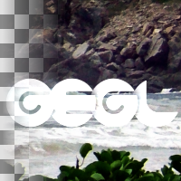

Add
Math operation add, performs the operation per pixel, using either the constant provided in 'value' or the corresponding pixel from the buffer on aux as operands. (formula: result = input + value)
Value
global value used if aux doesn't contain data
name: value
type: double
default: 0.00
minimum: -inf
maximum: +inf
ui-minimum: -1.00
ui-maximum: 1.00
ui-gamma: 1.00
ui-step-small: 0.00
ui-step-big: 0.10
ui-digits: 3
pads: aux input output
parent-class: GeglOperationPointComposer
categories: compositors math
source: operations/generated/add.c
 This page is part of the online GEGL Documentation, GEGL is a data flow based image processing library/framework, made to fuel GIMPs high-bit depth non-destructive editing future.
This page is part of the online GEGL Documentation, GEGL is a data flow based image processing library/framework, made to fuel GIMPs high-bit depth non-destructive editing future.